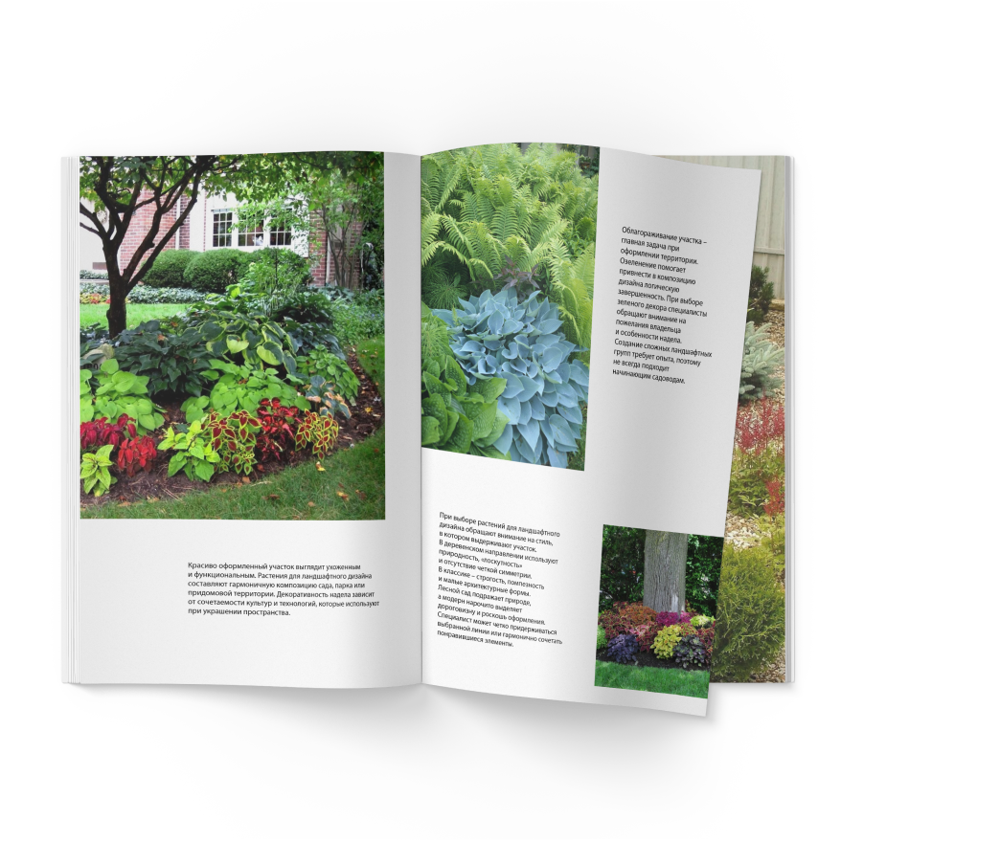
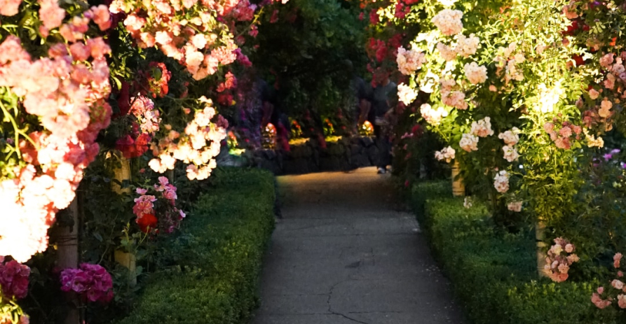
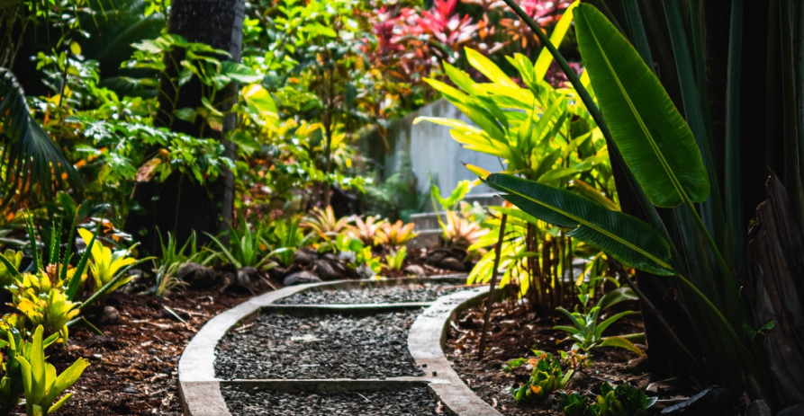

Создаем не просто красивый сад с картинки, а место, куда захочется возвращаться.
От проекта до ухода за садом – один подрядчик. Мы несем ответственность за все этапы работ. Ваш сад будет органичен и выполнен в одном стиле. Мы делаем участок практичным, безопасным и комфортным для всех членов семьи. В работе мы используем современные и качественные материалы, как залог долговечности производимых работ. Благодаря нашему подходу исключаются возможные ошибки до начала строительных работ и предотвращаются непредвиденные расходы.



Как выбрать растения для сада?
Пришлем инструкцию!
Наши проекты




4 шага до реализации проекта вашей мечты
Расскажите нам, что вы хотите увидеть на своем участке Побеседуйте с нашим специалистом. Он приедет к вам в любое удобное время.
Оцените проект, который разработают наши специалисты, и внесите изменения Архитектор разработает проект ландшафтного дизайна и сделает 3D-визуализацию.
Дождитесь окончания ландшафтных работ Вы получите идеальный участок с хорошим дренажом, мощеными дорожками и площадками, высаженными растениями — деревьями, кустарниками, цветами и газоном.
Делегируйте уход за участком профессионалам При необходимости мы будем приезжать регулярно и следить за состоянием участка.